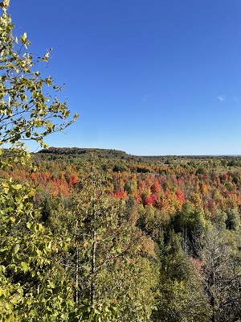
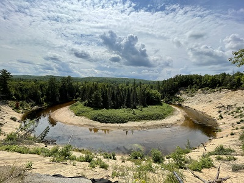
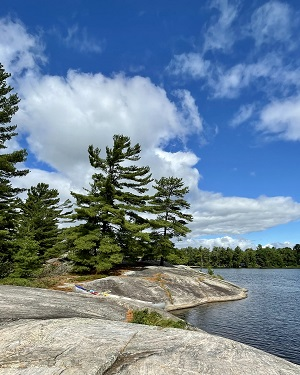
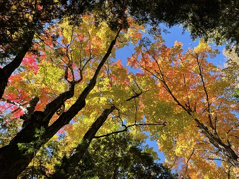
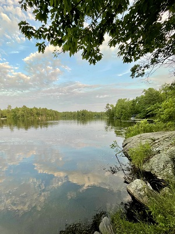
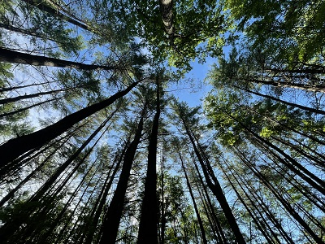
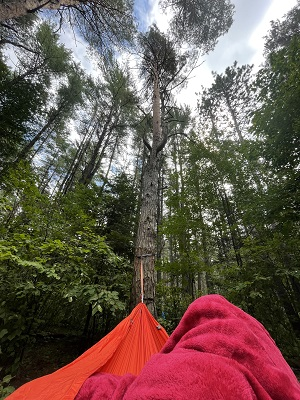
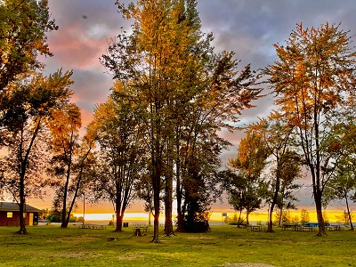

HELEN PLESKO
Born and raised in Toronto, Ontario, Canada. Seeking a new career involving GIS. Willing to relocate.
EDUCATION
Fleming College, Lindsay ON
Ontario College Graduate Certificate, Geographic Information Systems Applications Specialist, 2024
Queen's University, Kingston ON
Bachelor of Education, Primary/Junior Division, 2018
Trent University, Peterborough ON
Bachelor of Science (Honours), Physical Geography Major with several courses in Mathematics, 2017
EXPERIENCE
Toronto District School Board, Toronto ON
Helping youth reach their full potential by creating and leading differentiated and engaging lesson plans based on the Ontario Curriculum.
Roles:
- Occasional Teacher, On-call, 2018-Present
- Core French Teacher, Long-term Occasional, 2022
- Grade 5/6 Teacher, Long-term Occasional, 2022
- JK/SK Virtual School Teacher, Long-term Occasional, 2020-2021
- Grade 6 and 7 English Teacher, Long-term Occasional, 2019-2020
High Park Nature Centre, Toronto ON
Shared my love for and knowledge of the flora, fauna, and trails of Toronto's largest public park with visitors of all ages.
Roles:
- Nature Interpreter, 2018-2020
- Environmental Education Summer Camp Counsellor, 2018-2020
- Cherry Blossom Ambassador, 2018
YMCA Cedar Glen Outdoor Centre, Schomberg ON
Strengthened the relationships of participants and helped them discover their potential through outdoor educational activities, including high and low ropes, fire and shelter building, and map and compass orienteering.
Role:
- Outdoor Educator, 2018-2019
SKILLS AND CERTIFICATIONS
Skills and Software
- ESRI Products (ArcGIS Pro, AGOL, Story Maps, Survey123)
- Writing Python and SQL
- Developing simple HTML and CSS documents
- Adobe Illustrator
- AutoCAD Map 3D 2024
- Google Suite (Docs, Sheets, Slides, Quiz, Jamboard, Gmail)
- Microsoft Suite (Word, Excel, PowerPoint, Access, Outlook)
GIS-Related Certifications
- HTML Essential Training (2017), LinkedIn, 2023
- ArcGIS Notebooks Basics, Esri, 2023
- Preparing for Network Analysis, Esri, 2023
- Spatial Interpolation with ArcGIS Pro, Esri, 2023
- Building Geoprocessing Models Using ArcGIS Pro, Esri, 2022
- Getting Started with the Geodatabase, Esri, 2022
- Introducing Illustrator, LinkedIn, 2022
Teaching-Related Certifications
- Ontario College of Teachers, 2018-Present
- Mathematics, Primary and Junior (Part 1) AQ, Trent University, 2021
- Reading (Part 1) AQ, Trent University, 2021
- Teaching English Language Learners AQ, Trent University, 2019
- Intermediate Division (Mathematics) ABQ, Trent University, 2018
- Special Education (Part 1) AQ, Trent University, 2018
OTHER ACCOMPLISHMENTS
Honours Thesis, Trent University, 2017
- Analysis of particle flight characteristics across wet and frozen surfaces
- Wind tunnel simulations took place at the Trent University Environmental Wind Tunnel in Peterborough, ON
- Acquired data through extensive use of the Laser Doppler Anemometer
HOBBIES AND INTERESTS
In my free-time, I like to...
- Read, thriller is my favourite genre
- Bake, cookies are my favourite dessert
- Cycle, along Toronto's waterfronts
- Hike and Camp, at Ontario Provincial Parks
Ontario Provincial Parks I've been to so far...
My love for the outdoors started at the young age of four, when my parents took me on a week-long camping trip at Killbear Provincial Park. Now, an adult, a goal that I have is to visit all of the Ontario Provincial Parks. I've visited 19 out of 330 so far - I've got a long ways to go!
Click on the red location pins to open up the park's page.

Where I'm headed next...
| PROVINCIAL PARK |
LATITUDE |
LONGITUDE |
SEASON |
ACTIVITIES |
| Awenda |
44.843699 |
-80.002699 |
Winter |
Day-trip, Snowshoeing |
| Killarney |
46.012567 |
-81.401889 |
Summer or Fall |
Camping, Swimming, Canoeing, Hiking |
| Lake on the Mountain |
44.039956 |
-77.056496 |
Summer |
Day-trip, Hiking, Picnic |
| MacGregor Point |
44.408899 |
-81.446512 |
Summer |
Camping, Cycling |
| Pinery |
43.24841 |
-81.82342 |
Summer or Winter |
Camping, Canoeing, Hiking, Cross-country Skiing |
| Sandbanks |
43.91122 |
-77.24169 |
Summer |
Camping, Swimming |
| Sleeping Giant |
48.506370 |
-88.728676 |
Summer |
Camping, Hiking, Canoeing |
Click on the purple location pins below to learn more about the parks on my Provincial Park Bucketlist!

Some photos from my provincial park adventures...







